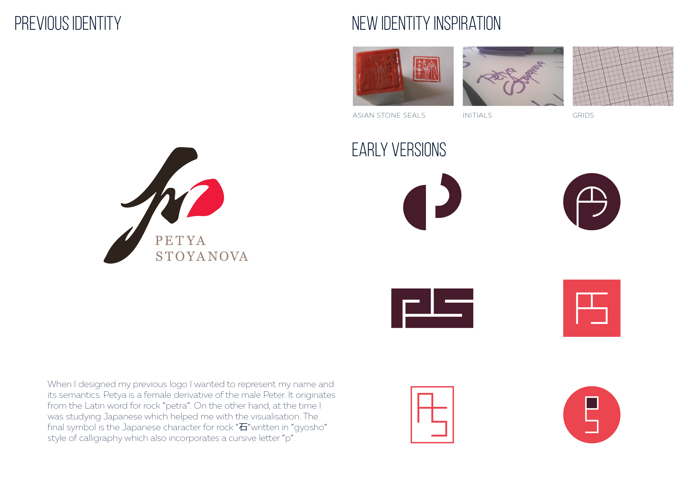
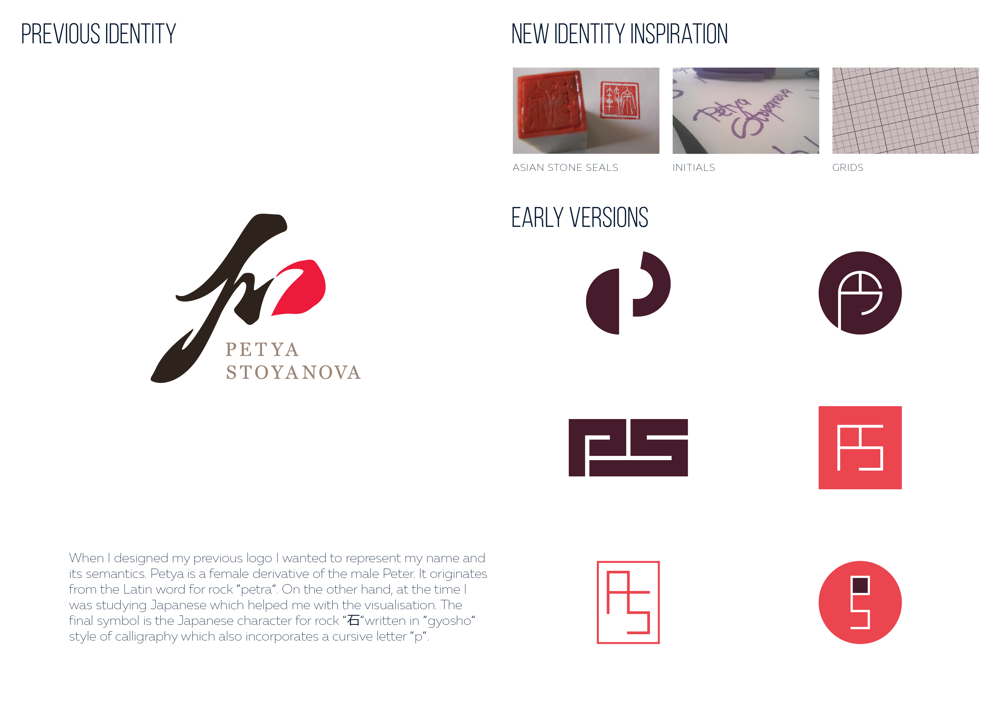

, front-end developer, illustration enthusiast & orchid hoarder.
What kind of designer am I? Lines could be a bit blurry indeed. I consider myself a multidisciplinary designer with expertise in visual design, inclined towards UX & UI design. Within my current role in the Research & Development team, I've undertaken various responsibilities. These range from assisting in interviews and testing sessions with users, compiling research outputs, building personas, user journeys and flows, building low and high fidelity prototypes, UI design and technical implementation.
I am particularly intersted in the EdTech and Games industries and companies with higher goals than just generating revenue. I like to be part of a team aspiring to create something awesome rather than just build software.
50%
Visual and UI design30%
Research & UX design20%
Front-end development


 
